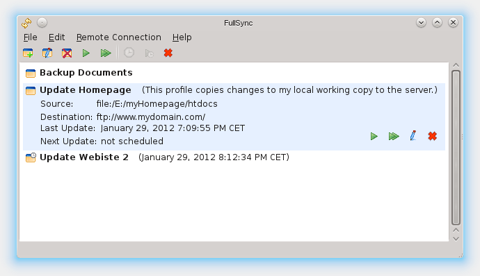

Getting Started
We will start creating a simple profile which updates a destination directory with changes in the source directory. For example, this is useful for updating websites on remote locations with changes that were done on the local working copy. Additionally, we will make the profile being executed at specific times.
First, you need to create a new and empty profile. You will now see an empty
Profile Details Window. After entering
a name you have to specify the source and destination locations. As source
we will use a local directory, so you can use the browse button. The destination
will be an FTP-URL, which should look like this:
ftp://your.domain.com/relative/path where the 'relative path' is the
path needed to navigate to the destination path after logging in. So if you are
unsure what to enter, simply connect to the FTP site with your standard FTP
tool and find out what lies between the startup (default) directory and the
directory you want to be the destination. After that, enter the username and password.
Alternatively you can also specify a local path here, if you want to.
more about connection types
Now that the source and destination are given you will need to define in which
way you want those two locations to be synchronized. In this example we will use
Publish/Update, which will synchronize in just one direction, from source to
destination, as most of the currently provided types do.
Alternatively you can use Backup Copy or Exact Copy which have slightly different
behaviors that are shortly described in a text besides.
more about synchronization types
The last thing is defining the ruleset. Just select the simple rule set, activate
"Sync Subdirectories" and that's it.
more about rulesets
Now you can press "ok" and run the profile. To additionally specify a scheduled execution, simply edit the profile and select "Edit Scheduling". If you are used to crontabs you can specify a crontab-like scheduling, or simply take the interval execution. After accepting the new scheduling, enable this profile for scheduled execution by checking the "Enabled" option and press "ok". If you now enable the scheduler by pressing the run button in the toolbar all scheduled projects will be executed at their specific times.
Connection Types
FullSync supports a very flexible way of accessing different file system types as source and destination for synchronization. Currently available are the following types:
- file:///[drive:/]absolute-path
- Access the local filesystem directly. For windows, add the drive letter. No username or password required/supported.
- ftp://host[:port]/relative-path[?[passive=true|false][&compatible=true|false]]
-
Access a remote server using ftp. Uses username and
password to authenticate.
[0.9.1] As of FullSync 0.9.1 you can add two query options to the url:- passive
defaults to true, if you have connection problems set it false - compatible
defaults to false, if you have problems with directories containing minus or spaces set it to true.
- passive
- sftp://host[:port]/relative-path
- Access a remote server using sftp. Uses username and password to authenticate.
- smb://host/share/relative-path
- Access a computer using smb. Uses username and password to authenticate. If you need to specify a domain, use "username@domain" in the username field.
RuleSets
Currently there are two kinds of rule sets supported: simple rule sets and advanced rule sets.
For basic operations the simple rule set is enough, it allows
you to define ignore and accept patterns (actually regular
expressions) and will operate in a default way.
So a simple regular expression for matching specific file endings looks
like this: .+\.txt or .+\.(txt|jpg|tmp) (for
matching multiple endings).
If you just want to match complete file/directory names use this:
DirectoryName or for multiple names
(DirectoryName1|DirectoryName2|file\.extension).
To match just the beginning or ending use the following, which is quite
much the same as matching endings: prefix.+ or
.+suffix (note: + means there must be at least one character.
use * instead to make it match no character as well.).
Until there is a more userfriendly way available, please use google
to find out more about regular expressions.
Advanced rule sets allow you to set rules more detailed,
like setting compare conditions, allowing deletion and it
allows you to overwrite these rules in each directory using
special files. At the moment, the format of the file is very
old and there are many options no longer supported, but still
you have the possibilty to overwrite ignore and accept patterns
per directory. To use the advanced rule set, simply copy the
sample.syncrules file to your source directory and rename it
to .syncrules (on windows you may need to use an editor or some
other filemanager to do this as the explorer does not like
names beginning with a dot). This will be the initial rule set
file containing one rule set named "UPLOAD". this must be named
in the advanced rule set options of the profile. To overwrite
ignore or accept (former "take") rules, just put a file called
.syncrules into the directory and copy the start and end rule set
lines into the file. now you can define a new ignore rule by
adding a line DEFINE IGNORE "<pattern>".
Synchronization Types
You can synchronize two locations using one of the following supported types:
- Publish/Update
- This is used to update a website from a local copy to a remote server. It will apply changes to the destination but not the other way around. If a file changed in the destination a warning will be generated so it is not overwritten without your knowledge. Additional files in the destination will be ignored, deleted files in source will also be deleted on the destination. Short: FullSync creates an exact copy of the source and keeps track of what it uploaded so additional files (like generated data or config files) in destination are not affected.
- Backup Copy
- Copies all changes in the source to destination but does not delete anything in destination.
- Exact Copy
- Copies all changes in the source to destination including deletions.
- Two-Way Synchronization
-
Compares two locations and copies newer files to the other side.
BEWARE: it does not recognize changes on both sides! in this case, the older file is overwritten and changes to it are lost!
Main Window
This window is the main part of the graphical user interface. It allows you to create, edit or delete profiles, run profiles and choose which actions should be performed, enable and disable the scheduler, edit properties and connect to other locations.
Profile Details
In the profile details you can change properties of a specific profile.

more about SynchronizationTypes

more about ConnectionTypes (used in source and destination)